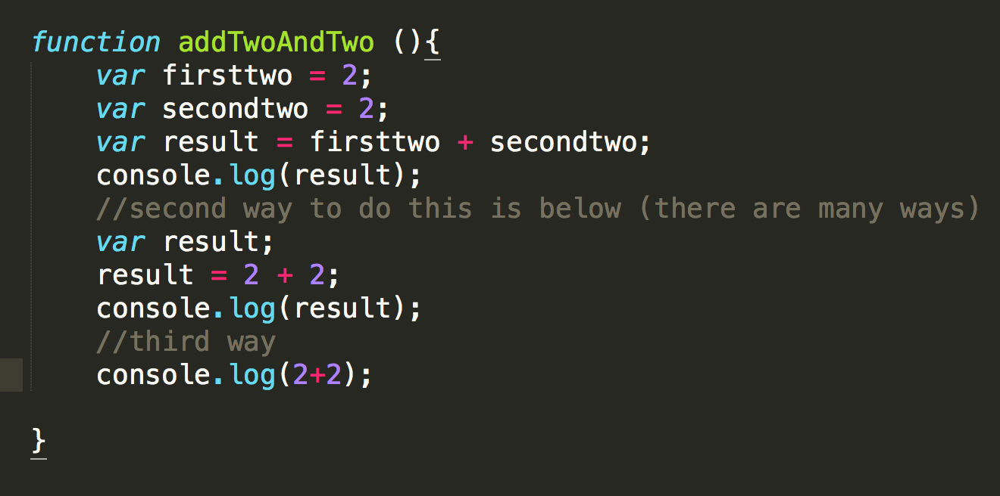

A screenshot of the code to embed a processing canvas, followed by an actual processing canvas:
Javascript is the engine running behind things that make them move, talk, and connect with other things.
p5.js is a javascript implementation of Processing. It still uses a canvas and such.
Slogan of jQuery: write less, do more.
AJAX = load the page once, then stuff keeps happening without you needing to refresh the URL.
On using MAMP: in most cases, we can double-click on HTML files and open them in a browser locally. Sometimes, though, you need an actual web server to load those files.
Accessing your new server is as simple as going to the web address: localhost:8888
In p5.js, you'll use a canvas instead of a size for your background – this is so that you can make different types of things other than canvases.
JSON = javascript object notation, in which you store functions in variables.
Javascript gives you a few built in objects which you can use in your code:
CODE CHALLENGE: write a function with adds 2 and 2 together:
Here's how to make a simple function that draws a square: